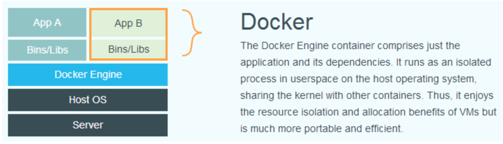

Docker入门
Docker入门
Docker是一个开源的引擎，可以轻松的为任何应用创建一个轻量级的、可移植的、自给自足的容器。Docker 项目的目标是实现轻量级的操作系统虚拟化解决方案。容器是在操作系统层面上实现虚拟化，直接复用本地主机的操作系统，而传统方式则是在硬件层面实现。

docker的整个生命周期有三部分组成：镜像（image）+容器（container）+仓库（repository）。容器是由镜像实例化而来。镜像是文件，容器是进程。容器是基于镜像创建的，即容器中的进程依赖于镜像中的文件。
Docker进程认为整个文件系统是以读写方式挂载的。 但是所有的变更都发生顶层的可写层，而下层的原始的只读镜像文件并未变化。由于镜像不 可写，所以镜像是无状态的。
父镜像：一个镜像可能会依赖于一个或多个下层的镜像，则此时下层镜像为上面的父镜像。
镜像ID: 64位16进制值(256位)标识，前12个字符为简化使用的短标识。
*注意一个镜像不能超过 127 层
Docker 操作
获取镜像：
sudo docker pull xxx可省官方仓库注册服务器
registry.hub.docker.com, 但如果需要从别的仓库下载镜像的话，则需要指明。运行ubuntu镜像中的bash命令行：
sudo docker run -t -i ubuntu:12.04 /bin/bash显示本地镜像：
docker images容器状态有七种：
- created（已创建）
- restarting（重启中）
- running 或 Up（运行中）
- removing（迁移中）
- paused（暂停）
- exited（停止）
- dead（死亡）
修改镜像：
先运行启动已经下载的镜像，在该镜像中用apt-get或其它命令添加内容达到修改的目的。
exit
docker commit命令
sudo docker commit -m "Added json gem" -a "Docker Newbee" 0b2616b0e5a8 ouruser/sinatra:v2-m 说明信息， -a 指定更新的用户信息， 后面为ID，最后为指定目标仓库和tag
Dockerfile创建镜像：
1
2
3
4
5
6# This is a comment
FROM ubuntu:14.04
MAINTAINER Docker Newbee <newbee@docker.com>
RUN apt-get -qq update
RUN apt-get -qqy install ruby ruby-dev
RUN gem install sinatra- FROM: 以哪个镜像为基础
- 接着为维护者的信息
- RUN指令：会在创建时一一运行
docker build -t='目标仓库:tag' path (.表当前目录)修改标签：
docker tag xxx删除本地镜像：
先docker rm删除依赖镜像的容器，再docker rmi移除镜像上传镜像：
Docker Hub注册，
docker push 镜像名到指定的仓库以实现共享。
我们重新看到 `sudo docker run -t -i ubuntu:12.04 /bin/bash` 一般新建并启动用到就是run命令。
-t 选项让Docker分配一个伪终端（pseudo-tty）并绑定到容器的标准输入上， -i 则让容器的标准输入保持打开。可以连写为-it
--privileged=true : 给定权限，直接配置主机的网络堆栈
--net=XX : 指定网络配置 --ip 配套使用
docker run 创建容器时，Docker后台一系列操作为
- 检查本地是否存在指定的镜像，不存在就从公有仓库下载
- 利用镜像创建并启动一个容器
- 分配一个文件系统，并在只读的镜像层外面挂载一层可读写层
- 从宿主主机配置的网桥接口中桥接一个虚拟接口到容器中去，即配置网络环境
- 从地址池配置一个 ip 地址给容器
- 执行用户指定的应用程序
- 执行完毕后容器被终止
docker start/stop: 启动/关闭容器
-d : 指定容器在后台以守护态运行( 在run后面)
docker export/import: 导出/导入容器
容器连接：
-p: 127.0.0.1:5001:5000/tcp 容器内部5000tcp端口绑定到指定主机5001端口-P: 随机映射主机端口快速查看容器端口绑定情况:
docker port [NAMES] [port]--name: 为容器命名docker network create -d [NetType] [NAME]: 创建网络。运行容器并添加到指定网络test-net中,
docker run -itd --name test1 --network test-net ubuntu /bin/bash, 加入到同一个网络中的不同容器可以相互ping通--link: 容器之间建立安全的连接，后面跟的是name : aliassudo docker run -d -P --name web --link db:db [training/webapp python app.py]注意[]里面的是web的定义。
容器访问控制
iptables -f: 关闭防火墙开启本地转发(访问外部网络) :
sysctl net.ipv4.ip_forward=1
数据卷 volumes
数据卷可以在容器之间共享和重用，对其的修改会立即生效，更新不影响镜像，直到没有容器使用。
sudo docker run -d -P --name web -v /webapp training/webapp python app.py
-v 创建数据卷并加载到容器中，还可以指定挂载主机的一个目录，:ro 指定为只读(默认是读写)
添加数据卷，并挂载到主机目录：
docker run -it -v /[宿主机绝对路径目录]:/[容器内目录] [镜像名]
- 数据卷容器：专门用来提供数据卷供其它容器挂载。
docker volume create [容器名]
如果创建了一个数据卷容器，可以在其他容器中使用 –volumes-from 来挂载 dbdata 容器中的数据卷。
docker run -d --volumes-from dbdata --name db1 training/postgres
Docker 底层实现
Docker采用C/S架构，即主机为Client，容器之类的为Server。
Docker网络采用的Linux上网络名字空间和虚拟网络设备，在主机和容器内分别创建一个虚拟接口。